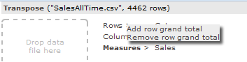

Transpose
Want a data
analysis tool where you can simply load a data file with one click and then get
started creating insightful pivot tables? All this right in your browser so
there's no need to install any software? Look no further.
Transpose
is a data analysis tool which runs completely in your browser. There is no
server back-end. Data files with several hundred thousand rows can be analyzed
with sub-second performance. This document will show you how to use Transpose
by going through a couple of examples.
Example 1 goes through a sales reporting scenario. The
example data file "SalesAllTime.csv" can be downloaded from here. Please download "SalesAllTime.csv" in
order to follow the example.
Example 2 goes through a customer churn analysis scenario.
The example data file "churn.txt" can be downloaded from here. Please download "churn.txt" in order to follow
the example.
1. Drag n' drop the data file (CSV,
tab-delimited) onto the drop area, or click here to load the file immediately
2. A file sample window will pop up.
Transpose automatically detects line separator and field separator. Click a
field name to change field type which can be dimension ( ), measure (
), measure ( ) or date (
) or date ( ). When done click "Load data"
button
). When done click "Load data"
button
3. Once the data file is loaded you
will see the following
4. Click Rows and then Category field
5. Click Columns and then Year field
6. Click Measures and then Sales field.
You now have a pivot of Sales by Year and Category
7. Click the arrow to the right of Rows
(>). You will see a menu. Click "Add row grand total"

Your pivot now looks like this:
8. Click the arrow to the right of
Columns (>). You will see a menu. Click "Add column grand total"
Your pivot now looks like this:
9. Click the Sales field to the right
of Measures. You will see a menu. Click "Heatmap
pane"
Your pivot now looks like this:
10. Again click the Sales field to the
right of Measures. You will see the same menu again. Click "% of pane total"
Your pivot now looks like this:

11. If you want to sort by any of the
columns simply click the up/down-arrow icon (). Click the up/down-icon to the
left of Sales Total. Your pivot will now look like this:
Your pivot is now sorted in descending order by Sales Total. If you want to
sort by Sales Total in ascending order click the down-icon () to the left of Sales Total. Your
pivot will now look like this:
12. Click Rows and then click the Hour
field. Your pivot will now look like this:
13. Click the Category field to the
right of Rows. You will see a menu. Click "Add sub-total"
Your pivot will now look like this:
14. Click "Clear Pivot" below Fields in
the left part of the screen
15. Click the arrow to the right of the
Sales field (>). You will see a menu. Click "Bin value"
You will see a new field has appeared, "Sales (binned)". Click the filter-icon
() to the right of "Sales (binned)"
You will then see a filter-box for "Sales (binned)" which you can use to filter
your pivot table
16. Add "Sales (binned)" to Rows,
Category to Columns and "# Records" to Measures. Also click the filter-icon to
the right of Category. Your screen should look like this

17. In the Category filter box uncheck
All and then check the categories "pop/rock", "dvd/video"
and "singles". Your screen should look like this
1. Drag n' drop the data file (CSV,
tab-delimited) onto the drop area, or click here to load the file immediately
2. A file sample window will pop up.
Change field types as you wish. Click load data
3. Check the prior distribution of
churners vs. non-churners. Click Columns and then Churner field. Then click
Measures and "# Records" field. Add column grand total by clicking > right
of Columns and then "Add column grand total". Finally click [# Records] in
Measures list and then "% of column total". We can see that in our dataset of
5000 telecom customers there are about 86% non-churners and 14% churners. Our
task now is to discover which factors can be used to separate/predict/explain a
churner from a non-churner. As it turns out the Transpose tool can do this
automatically for us
4. Just to get a feel of how one of the
factors behaves for non-churners and churners we can plot the percentiles
segmented by Churner field. Click > to the right of "total day minutes"
field and then the dropdown for "Get percentiles by:".
Select Churner and the click "Get percentiles by".
5. You will now see a percentile plot
for "total day minutes" factor segmented by churner vs. non-churner. Clearly we
can see that this factor is good for separating a churner from non-churners.
Churners tend to have a higher value for "total day minutes"
6. Now let's have Transpose find more
elaborate separation rules for churners vs. non-churners. Click > to the
right of Churner field and then click Explain. The following dialog will
appear. Select fields/factors "account length", "international plan", "voice
mail plan", "number vmail messages", "total day
minutes", "total day calls", "total day charge", "total eve minutes", "total
eve charge", "total night minutes", "total night calls" "total night charge", "total
intl minutes", "total intl
calls", "total intl charge", and "number customer
service calls". Call the explanation "Customer churn". Click Explain and wait
until top right corner says
7. Now click > to the right of
Churner field again and under Explanations click "Customer churn". A dialog
will appear with rules to explain the separation of churners vs. non-churners
using the best fields/factors from previous point. A dialog appears and you can
now inspect the different rules that Transpose has found
Thanks for
going through this documentation. You should now be able to use the tool with
your own data files.